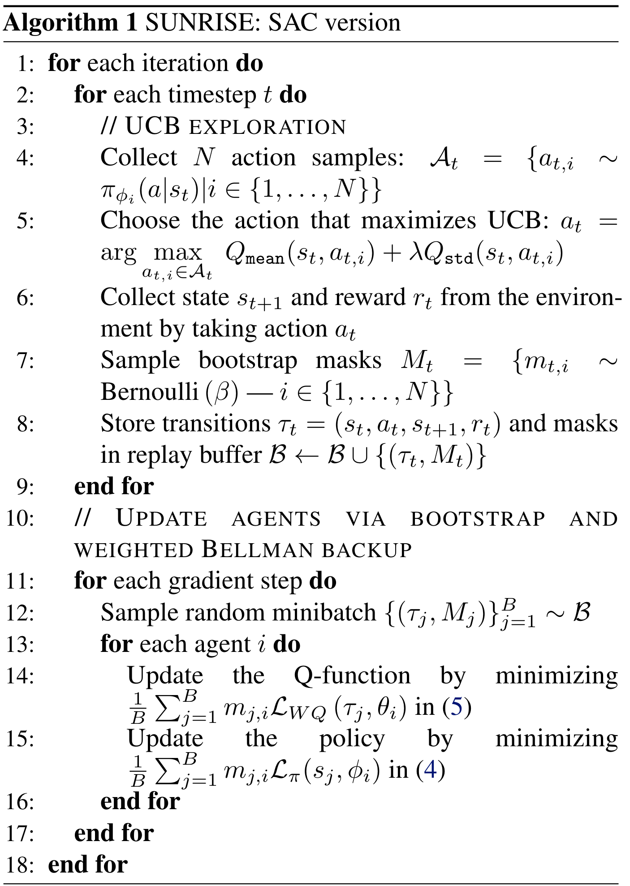
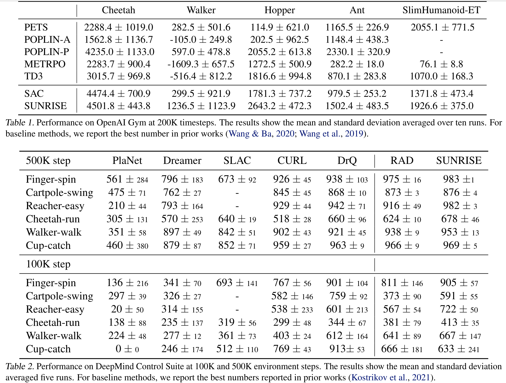

SUNRISE
Contents
SUNRISE#
제목: SUNRISE: A Simple Unified Framework for Ensemble Learning in Deep Reinforcement Learning
저자: Lee, Kimin, Michael Laskin, Aravind Srinivas, and Pieter Abbeel, UC Berkeley
연도: 2021년
학술대회:International Conference on Machine Learning
키워드: Agent ensemble, Uncertainty, Off-policy, Model-free, Discrete & continouse action space
SUNRISE에는 \(N\)개의 Soft Actor-critic (SAC) 에이전트가 있다 (SAC는 하나의 예시이며, Rainbow DQN 등을 사용할 수도 있다.). 즉, \(N\)개의 정책과 Q-네트워크 \(\left\{ Q_{\theta_i}, \pi_{\phi_i} \right\}_{i=1}^{N}\)가 있다. 참고로 실험에서 \(N=5\)이다. 네트워크 파라미터 \(\theta_i, \phi_i\)들은 모두 서로 다르게 랜덤 초기화된다. 이렇게 다수개의 네트워크를 사용하여 본 논문에서는 다음 세 가지를 제안한다.
Weighted Bellman Backups
Q-네트워크 학습시, 각 transition에서 발생한 TD error에 가중치를 부여하여 업데이트
Bootstrap with random initialization
\(N\)개의 정책 네트워크 및 Q-네트워크를 서로 다른 파라미터로 초기화시키기 때문에 다양한 관점을 가진 네트워크를 얻을 수 있다.
Replay buffer는 공유하지만, 에이전트마다 각 샘플을 사용할지 안 할지 마스킹하여 에이전트마다 다른 데이터를 가지고 학습된다.
UCB exploration
행동을 선택할 때 Q-network 값의 평균과 분산을 UCB로
Weighted Bellman Backups#
일반적인 SAC는 다음 Bellman error를 최소화시키는 방법으로 Q-네트워크를 학습시킨다.
이때, \(\tau_t=(s_t, a_t, r_t, s_{t+1})\)는 하나의 transition이고, \(\bar{V}(s_t) = \mathbb{E}_{a_t \sim \pi_{\phi}}\left[ Q_{\bar{\theta}}(s_t, a_t) - \alpha \log \pi_{\phi}(a_t | s_t)\right]\), \(\alpha\)는 temperature 하이퍼파라미터이다.
SUNRISE에서는 \(i\)번째 Q-네트워크를 학습시키기 위해 다음과 같은 weighted Bellman backup을 사용한다.
이때, 가중치 함수 \(w(s, a)\)는 다음과 같이 정의된다.
여기서 \(T>0\)은 tempertature 하이퍼파라미터이고, \(\sigma\)는 시그모이드 함수이다. \(\bar{Q}_{\text{std}}(s, a)\)는 \(N\)개의 \(Q_{\theta_i}(s, a)\)들에 대한 표본표준편차이다. 표준편차는 항상 양수이기 때문에 \(- \bar{Q}_{\text{std}}(s, a) * T\)는 항상 음수이고, 따라서 \(\sigma \left( - \bar{Q}_{\text{std}}(s, a) * T\right)\)는 0과 0.5 사이의 값을 갖는다. 여기에 0.5를 더해주었으니 \(w(s, a)\)는 0.5와 1 사이의 값을 갖는다. 경험적 (emperically) 으로 가중치 함수를 이렇게 디자인했다고 한다. 표준편차 클 수록 샘플에 낮은 가중치를 부여하고, 표준편차가 작을수록 높은 가중치를 부여한다. 표준편차가 크다는 것을 Q-함수 추정값에 많은 잡음 (noise)이 들어갔다고 생각하여 낮은 가중치를 주는 것이다.
Bootstrap with random initialization#
네트워크 파라미터 \(\theta_i, \phi_i\)들은 모두 서로 다르게 랜덤 초기화하고, 각 에이전트를 서로 다른 샘플로 학습을 시킨다. Replay buffer는 공유하지만 각 transition \(\tau_t=(s_t, a_t, r_t, s_{t+1})\)를 버퍼에 넣기 전에 에이전트마다 해당 \(\tau_t\)를 사용할지 안 할지를 결정하는 bootstrap 마스크 \(M_t = \{ m_{t, i} \}_{i=1}^{N}\)를 만들어서 넣는다. 각 타임스탭 \(t\)에서 각 에이전트 \(i\)마다 \(\beta\)를 파라미터로 갖는 Bernouli 분포에서 \(m_{t,i} \in \{ 0,1\}\)를 샘플링한다. 정책 네트워크 및 Q-네트워크 업데이트시 손실함수를 만들 때 각 에러에 \(m_{t,i} \in \{ 0,1\}\)를 에러에 곱해줘서 손실함수에 기여하거나 기여할 수 없게 만든다. 그런데 \(\beta=1\)일 때 성능이 좋았다고 한다. 즉, 그냥 데이터 다 사용하는게 좋다고 한다.
UCB exploration#
매 타임스탭 \(t\)에서 다음과 같이 행동을 고른다.
\(Q_{\text{mean}}\)와 \(Q_{\text{std}}\)는 각각 \(N\)개의 \(Q_{\theta_i}(s_t, a)\)들에 대한 표본 평균과 표본 표준편차이다. 표준편차가 클수록 탐색이 덜 된 상태-행동 순서쌍으로 보고 탐색을 하게 만든다. \(Q_{\theta_i}(s_t, a)\)들이 점점 수렴하게 되어 표준편차가 작아지면 \(Q_{\text{mean}}(s_t, a)\)가 큰 행동을 취하게 된다.
Algorithm#

Result#

Reference#
Lee, Kimin, Michael Laskin, Aravind Srinivas, and Pieter Abbeel. “SUNRISE: A Simple Unified Framework for Ensemble Learning in Deep Reinforcement Learning.” In Proceedings of the 38th International Conference on Machine Learning, 6131–41. PMLR, 2021. https://proceedings.mlr.press/v139/lee21g.html.